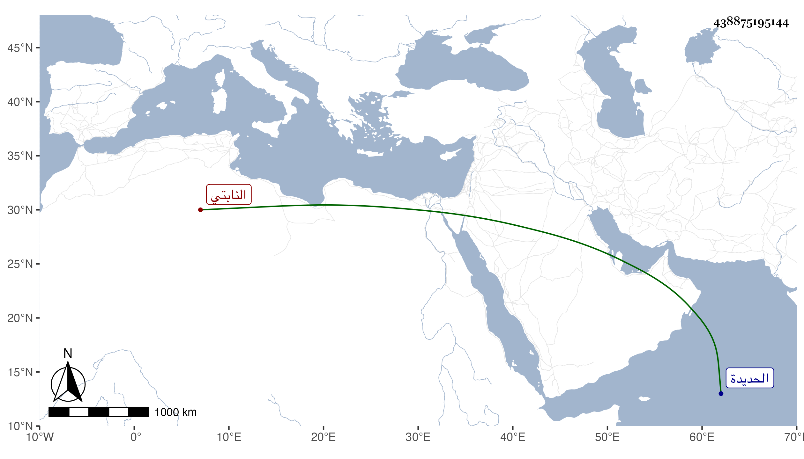

0902Sakhawi.DawLamic.ITO20230111-ara1.EIS1600.438875195144
Biography ID: 438875195144
إبراهيم بن عمر بن موسى صارم الدين النابتي صاحب الحديدة كان مباركا فاضلا يفهم شيئا من العلوم وينظر في التواريخ وكتب الصوفية وأحب بأخرة كتب ابن العربي ولازم النظر فيها واغتبط بتحصيلها بحيث اجتمع عنده منها جملة بل واقتنى من سائر الكتب شيئا كثيرا ووقفها بعد موته على أهل الخرم فلم يتم ذلك لاستيلاء زوج ابنته المقبول بن أبي بكر الزيلعي صاحب الحال عليها وحملها معه إلى قريته اللحية ثم وضعها في خزانة فلم ينتفع بها أحد . وكانت وفاته في جمادى الأولى سنة ست وسبعين . أفاده لي بعض الفضلاء اليمنيين ممن أخذ عني .
